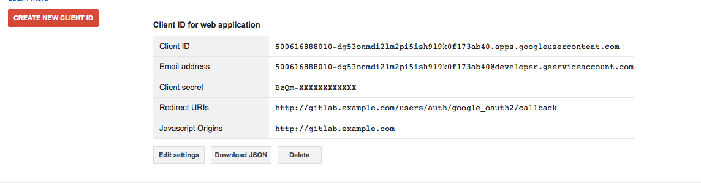

Google OAuth2 OmniAuth Provider
To enable the Google OAuth2 OmniAuth provider you must register your application with Google. Google will generate a client ID and secret key for you to use.
Sign in to the Google Developers Console with the Google account you want to use to register GitLab.
Select "Create Project".
Provide the project information
- Project name: 'GitLab' works just fine here.
- Project ID: Must be unique to all Google Developer registered applications. Google provides a randomly generated Project ID by default. You can use the randomly generated ID or choose a new one.
Refresh the page. You should now see your new project in the list. Click on the project.
Select the "Google APIs" tab in the Overview.
Select and enable the following Google APIs - listed under "Popular APIs"
- Enable
Contacts API - Enable
Google+ API
- Enable
Select "Credentials" in the submenu.
Select "Create New Client ID".
Fill in the required information
- Application type: "Web Application"
- Authorized JavaScript origins: This isn't really used by GitLab but go ahead and put 'https://gitlab.example.com' here.
- Authorized redirect URI: 'https://gitlab.example.com/users/auth/google_oauth2/callback'
Under the heading "Client ID for web application" you should see a Client ID and Client secret (see screenshot). Keep this page open as you continue configuration. 
On your GitLab server, open the configuration file.
For omnibus package:
sudo editor /etc/gitlab/gitlab.rbFor installations from source:
cd /home/git/gitlab sudo -u git -H editor config/gitlab.ymlSee Initial OmniAuth Configuration for initial settings.
Add the provider configuration:
For omnibus package:
gitlab_rails['omniauth_providers'] = [ { "name" => "google_oauth2", "app_id" => "YOUR_APP_ID", "app_secret" => "YOUR_APP_SECRET", "args" => { "access_type" => "offline", "approval_prompt" => '' } } ]For installations from source:
- { name: 'google_oauth2', app_id: 'YOUR_APP_ID', app_secret: 'YOUR_APP_SECRET', args: { access_type: 'offline', approval_prompt: '' } }Change 'YOUR_APP_ID' to the client ID from the Google Developer page from step 10.
Change 'YOUR_APP_SECRET' to the client secret from the Google Developer page from step 10.
Save the configuration file.
Restart GitLab for the changes to take effect.
On the sign in page there should now be a Google icon below the regular sign in form. Click the icon to begin the authentication process. Google will ask the user to sign in and authorize the GitLab application. If everything goes well the user will be returned to GitLab and will be signed in.
Further Configuration
This further configuration is not required for Google authentication to function but it is strongly recommended. Taking these steps will increase usability for users by providing a little more recognition and branding.
At this point, when users first try to authenticate to your GitLab installation with Google they will see a generic application name on the prompt screen. The prompt informs the user that "Project Default Service Account" would like to access their account. "Project Default Service Account" isn't very recognizable and may confuse or cause users to be concerned. This is easily changeable.
- Select 'Consent screen' in the left menu. (See steps 1, 4 and 5 above for instructions on how to get here if you closed your window).
- Scroll down until you find "Product Name". Change the product name to something more descriptive.
- Add any additional information as you wish - homepage, logo, privacy policy, etc. None of this is required, but it may help your users.